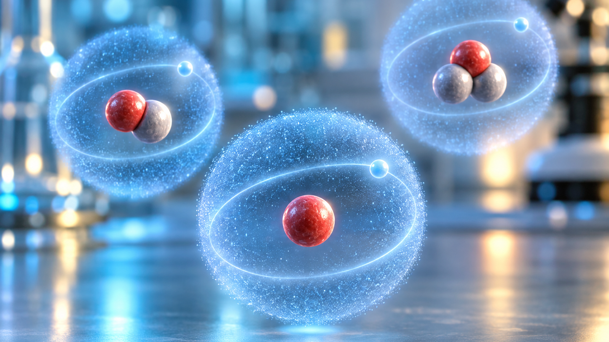
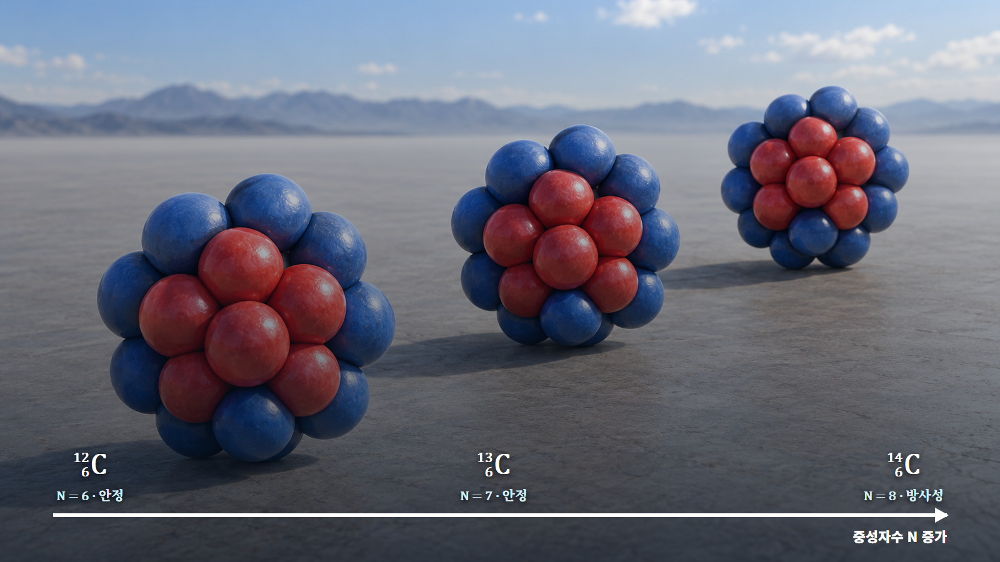

원자와 원자핵의 기초 · 005
동위원소의 의미
같은 원소 안에서 달라지는 원자핵의 구성과 성질

동위원소는 양성자 수는 같고 중성자 수가 다른 원자입니다. 화학적 정체성은 유지되지만 질량·안정성·핵반응 특성은 달라질 수 있습니다.
원자번호와 질량수의 구분
원자번호 Z는 양성자 수이고 중성자 수는 N입니다. 양성자와 중성자를 합친 질량수 A는 A=Z+N의 관계를 가집니다. 탄소-14는 양성자 6개와 중성자 8개로 이루어져 질량수가 14입니다.

수소 동위원소의 세 구성
수소-1은 양성자 1개와 중성자 0개, 중수소는 양성자 1개와 중성자 1개, 삼중수소는 양성자 1개와 중성자 2개를 가집니다. 세 원자는 모두 기본적으로 전자 한 개를 가져 화학적 성질은 비슷하지만, 질량과 핵적 성질은 다릅니다.
| 동위원소 | 양성자 | 중성자 | 안정성·대표 활용 |
|---|---|---|---|
| 수소-1 | 1 | 0 | 안정, 보통 물 |
| 중수소 | 1 | 1 | 안정, 중수와 핵융합 연구 |
| 삼중수소 | 1 | 2 | 방사성, 추적자와 핵융합 연구 |
탄소 동위원소의 안정성과 시간 측정
탄소-12와 탄소-14는 모두 양성자가 6개여서 화학적 행동이 거의 같습니다. 그러나 탄소-12는 안정하고 탄소-14는 시간이 지나며 붕괴합니다. 살아 있는 동안 계속되던 환경과의 탄소 교환이 사망 뒤 멈추므로, 남아 있는 탄소-14의 비율로 과거 생물 재료의 시간을 추정할 수 있습니다.
화학적 닮음과 핵적 차이
동위원소는 전자배치가 비슷해 화학반응에서는 닮았지만 핵의 질량과 안정성, 중성자 반응확률, 방사선 방출 여부는 다를 수 있습니다. 이 차이는 연대측정, 방사성 추적, 의학 진단, 원자로 연료와 감속재 선택에 활용됩니다.
수소 동위원소의 단계별 비교
경수소는 양성자 1개와 중성자 0개, 중수소는 1개와 1개, 삼중수소는 1개와 2개를 가집니다. 세 핵종의 `Z`는 모두 1이므로 수소지만 질량수는 1·2·3으로 다르고 삼중수소는 방사성입니다. 전자구조가 같아 화학반응은 비슷해도 질량차 때문에 반응속도와 확산에는 동위원소 효과가 나타납니다.
탄소 연대측정의 두 번째 예시
탄소-12와 탄소-14는 모두 양성자 6개입니다. 생물체가 죽어 환경과 탄소 교환이 멈추면 탄소-14가 붕괴합니다. 시료의 탄소-14 비율을 기준과 비교하면 경과시간을 추정할 수 있지만 붕괴통계, 오염과 초기비율 가정의 영향을 함께 평가해야 합니다.
원자로·의료 분야의 적용
중수소가 포함된 중수는 중성자 감속재로 이용되고, 삼중수소는 핵융합 연료와 추적자로 연구됩니다. 의료용 핵종은 원하는 기관에 도달하면서 검출 가능한 방사선을 내도록 선택합니다. 반감기, 방사선 종류, 화학적 거동과 공급 가능성을 함께 따져야 합니다.
같은 원소라는 표현의 한계
동위원소는 화학적 성질이 대체로 비슷하지만 완전히 같지는 않습니다. 특히 수소처럼 질량비가 큰 경우 반응속도 차이가 큽니다. 모든 동위원소가 방사성인 것도 아니며 안정동위원소도 많습니다.
동위원소 혼합물의 평균질량
자연 원소의 주기율표 원자량은 흔히 정수가 아닙니다. 여러 동위원소의 질량에 존재비를 곱해 더한 가중평균이기 때문입니다. 예를 들어 가상의 원소가 10 u 동위원소 20%와 11 u 동위원소 80%로 구성되면 평균은 10×0.20+11×0.80=10.8 u입니다. 이 평균값은 혼합물 1몰의 질량 계산에 유용하지만 개별 원자가 10.8 u라는 뜻은 아닙니다.
원자로 연료에서는 평균 원자량만으로 충분하지 않습니다. 핵분열성 동위원소의 원자분율이 반응률을 바꾸므로 U-235와 U-238 재고를 따로 계산합니다. 농축도도 질량분율과 원자분율을 구분해 사용해야 합니다.
동위원소 조성과 반응률
동위원소 존재비는 원료의 기원과 처리과정에 따라 달라질 수 있습니다. 자연 존재비를 적용할 수 있는지, 농축·희석·붕괴로 조성이 달라졌는지 확인해야 합니다. 핵반응률과 방사능은 각 동위원소 수밀도와 단면적 또는 붕괴상수를 따로 적용해 더합니다.
핵심 정리
동위원소는 양성자 수가 같고 중성자 수가 다른 핵종입니다. 원소명은 유지되지만 질량, 핵 안정성, 붕괴와 중성자 반응이 달라져 발전·의료·환경분석에서 서로 다른 역할을 맡습니다.